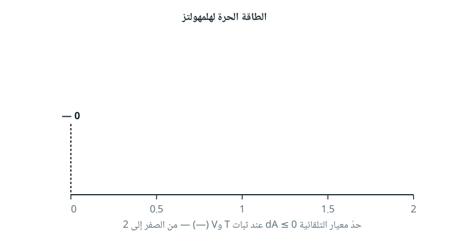

الطاقة الحرة لهلمهولتز
Helmholtz Free Energy
خاصية حالة تُعرَّف A ≡ U − T·S؛ تنقص في العملية التلقائية عند ثبات الحرارة والحجم، وتُعطي حدّ العمل الأقصى القابل للاستخراج.
الطاقة الحرة لهلمهولتز خاصية ديناميكية حرارية تُعرَّف A ≡ U − T·S، أي الطاقة الداخلية ناقص حاصل ضرب الحرارة المطلقة في الإنتروبيا. وهي تحويل ليجاندر يستبدل الإنتروبيا بالحرارة متغيرًا طبيعيًّا، فتصير A دالة في T وV، ويأتي تفاضلها dA = −S·dT − p·dV. ومن هذا التفاضل يستخرج معيار التلقائية عند ثبات الحرارة والحجم: dA ≤ 0، فالعمليتان المسموحتان تدفعان A إلى أدنى قيمة حتى التوازن. وتُستعمل في الكيمياء الفيزيائية لاتجاه التفاعلات في وعاء صلب الجدران، وفي حساب العمل الأقصى: العمل الأقصى القابل للاستخراج من نظام عند حرارة ثابتة يساوي −ΔA. ومثال عددي: ضغط مول واحد من غاز مثالي عند 298.15 K من لتر إلى نصف لتر يرفع A بمقدار 1718.3 جول.
كيف تعمل الظاهرة؟
تتكوّن A من حدّين متعارضين: U الذي ينخفض بترتيب الروابط وتقليل الطاقة الكامنة، و−T·S الذي ينخفض بازدياد العشوائية. وفي الحرارة المنخفضة يغلب حدّ الطاقة فتسود العمليات الناشرة للحرارة، وفي الحرارة المرتفعة يغلب الحدّ الإنتروبي فتسود العمليات الناشرة للفوضى كالذوبان والتفكك. ولأن الحجم ثابت في هذا المعيار لا يُبذل شغل تمدّد، فكل ما يخرج من النظام عملًا مفيدًا يُخصم من A مباشرة، ولهذا صارت A هي المقياس الطبيعي للعمل الأقصى في أنظمة ثابتة الحجم.
العلاقة بالأرقام
الوحدات: U بالجول، وT·S بالكلفن × جول/كلفن = جول، فـA بالجول. ولغاز مثالي عند حرارة ثابتة ΔU = 0 وΔS = nR·ln(V₂/V₁)، فيكون ΔA = −TΔS = −nRT·ln(V₂/V₁). وبالأرقام: n = 1 mol وR = 8.314462618 J/(mol·K) وT = 298.15 K، فـnRT = 1 × 8.314462618 × 298.15 = 2478.96 J. والضغط من 1 L إلى 0.5 L يعطي ln(0.5) = −0.6931، وΔS = 8.314462618 × (−0.6931) = −5.763 J/K، وΔA = −298.15 × (−5.763) = +1718.3 J مقابل 2478.96 × 0.6931. والإشارة موجبة لأن الشغل يُبذل على النظام لا منه.
مفاهيم متقاربة
أكثر خلط في الاستعمال أن تُطبَّق A على مسألة عند ضغط ثابت، فيظهر فرق يساوي pV ولا يُفسَّر. والثاني أن تُعامل A كأنها طاقة محفوظة داخل النظام، وهي دالة حالة تجمع بين طاقة وعشوائية ولا تُقاس مطلقًا بل فروقها. والثالث أن تُقارن A بالإكسيرجي مباشرة: الإكسيرجي تخصم أيضًا الفرق الحراري والضغطي عن المحيط، فالإكسيرجي ≤ ΔA عند المحيط نفسه، والتساوي في حالة خاصة.
حدود التطبيق
تصلح A للأنظمة المغلقة ثابتة الحجم؛ فإن تغيّر الحجم وجب استعمال G أو الإكسيرجي بحسب القيد الفعلي. وتفقد معناها في الأنظمة المفتوحة حيث يتغيّر عدد المولات، فتُستبدل بالجهد الكبير (grand potential). ويعتمد الحساب على قانون الغاز المثالي إن استُخدم، ويخطئ في السوائل والمواد المكثفة إن لم تُؤخذ معادلة الحالة الحقيقية. ولا تعطي A معلومة عن معدّل التفاعل بل عن اتجاهه فقط، فالنظام قد يكون تلقائيًّا وهو متجمد حركيًّا.

| الكمية | القيمة | المصدر |
|---|---|---|
| حاصل nRT للمول عند 298.15 K | 2478.96 J | [2] |
| تغيّر A عند ضغط غاز مثالي إلى نصف حجمه | +1718.3 J | [2] |
| تغيّر الإنتروبيا في الضغط نفسه | −5.763 J/K | [1] |
| فرق G − A للمول عند الحالة نفسها | 2478.96 J | [1] |
المصادر
استشهد بهذا المصطلح
الصيغتان مبنيتان من بيانات الصفحة نفسها: العنوان والتاريخ ورابط النسخة المنشورة.
الطاقة الحرة لهلمهولتز — Helmholtz Free Energy. (2026). ديوان المعرفة — انفراد. https://infiradev.com/diwan/terms/term-helmholtz-free-energy.html
@misc{term-helmholtz-free-energy2026,
title = {الطاقة الحرة لهلمهولتز},
titleaddon = {Helmholtz Free Energy},
howpublished = {{ديوان المعرفة — انفراد} — مرجع علمي عربي},
year = {2026},
url = {https://infiradev.com/diwan/terms/term-helmholtz-free-energy.html},
urldate = {2026-11-26},
note = {مراجعة علمية: hermes — مراجعة آلية بالتكليف 2026-11-26}
}
راجعه: hermes — مراجعة آلية بالتكليف 2026-11-26 · 2026-11-26 · آخر تحديث 2026-11-26